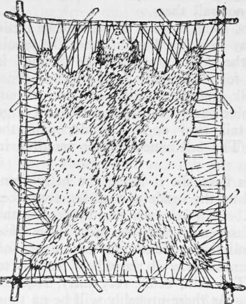

Trophies. Pelts, Buckskin And Rawhide. Part 2
Description
This section is from the book "Camping And Woodcraft", by Horace Kephart. Also available from Amazon: Camping and Woodcraft.
Trophies. Pelts, Buckskin And Rawhide. Part 2
Then pare away all the cartilage and flesh from the nose and lips, splitting them open for the purpose. If the head is that of a moose, the cartilage of its "bell" is to be removed.
Go over the entire skin and make sure that all fat and flesh have been removed, so it will keep well and so that when the taxidermist gets it his preservative will penetrate the skin evenly at all parts. Then wash it, inside and out, thoroughly, in cold or lukewarm water, to remove blood and dirt. Bloodstains are hard to remove from any kind of hair or fur, and on some, as the caribou's, they cause a rust that cannot be eradicated. Finally, turn the skin inside out and hang it up in a cool, shady place to dry, spreading its folds smoothly apart, not wrinkled, so that air can circulate freely over all parts. Never roll a fresh hide up, expecting it to dry that way; it would surely spoil.
A skin dried thus without any preservative at all will soak up better when the taxidermist gets it than if it had been salted. If, however, the weather be damp all the time, you will have to use salt. In this case rub plenty of fine salt over every inch of the inner surface of the skin; then roll the skin up and let it lie until morning; do not stretch it nor hang it up by the nose. Next morning examine it carefully for soft spots where the salt has not struck in; shave these down and rub salt into them. Do not use any alum, for it would shrink the skin.
Then immediately hang up the skin in a shady place, well out of reach of dogs and vermin.
Meantime you will have the skull to attend to. Before removing it, make the following measurements and note them down as a guide to the taxidermist :
1. Length from base of skull to where neck joins the body.
2. Girth of neck at throat.
3. Girth at center.
4. Girth around AB where neck joined body. Turn the head to one side and insert the knife between the base of the skull and the first or atlas vertebra, severing the muscles and tendons; then turn the head in the opposite direction and perform a similar operation there; give a wrench, and the skull is detached. Cut and scrape all flesh, etc., from the skull.
Disarticulate the lower jaw so that you can work better, and- clean it. Remove the tongue and eyes. Now get a stiff stick, small enough to enter the hole in the base of the skull, splinter one end by pounds ing it on a rock, and work this end around inside the skull so as to break up and remove the brain, using water to assist you. Wash out the inside of the skull, and tie the lower jaw in place.
Hides
How to remove and care for the entire skins of large animals is described in Vol. I., pp. 270-275. If they are to be used in making buckskin or rawhide, do not salt them.
Skins of bears, cougars, etc., that are to be made up into rugs may be skinned with either the whole head or only the scalp attached—the former if wanted mostly for decorative purposes, but practical minded folk prefer the latter, as these are not so mean to stumble over. If the animal has a large tail, slit the tail skin on the under side, the whole length. The tail bone must be removed in any case.
In skinning a bear slit it along the belly from chin to tail, and up the inside of each leg from toes to the belly slit. Skin out each foot by peeling the skin down and severing each toe just above base of nail. Skin out the ears like those of a deer, and the muzzle the same way if the whole head is to be preserved. The skin, being very fatty, requires careful fleshing. As there probably will be no time for this until the next day, spread the skin out on the ground, rub salt into it, and roll it up for the night, flesh side to flesh side. Next morning fix up a sapling for a "beam," as described under the head of Buckskin, throw the skin over it, rub some cornmeal or ashes on it, and thoroughly scrape off the fat. Then salt the skin again.
To stretch and dry a skin, set up a rectangular frame, well braced, which may be made of saplings lashed or nailed together. Lace the skin to this frame, drawing as taut and evenly all around as you can (Fig. 183). The best way is with a sacking or sail needle and heavy twine. If. you must make slits along the edges, from lack of a needle, cut them as small as practicable. Use a separate length of twine or thong on each side, so that all four can be stretched or let out independently. This is far better than to tack the skin up on a door or the side of a barn, as it gives the air free access to both sides. Set the frame in an airy, shady place, out of reach of dogs and "varmints".
Another way to stretch a slit-open skin is to lace it up inside a hoop. Lay the skin out flat. Get a rod of elastic wood long enough to bend into a hoop that will go clear around the outside of the skin, or, if need be, splice two or more rods together for the purpose. Tie the skin to the hoop at opposite sides, then the other way, and so on until all loose parts are taken up and the skin is stretched tight as a drumhead.
The skull of a hornless animal is easily prepared for cleaning by simmering- in water over the fire until the flesh begins to get tender (but beware of over-boiling, lest the sutures of the skull open and the teeth come loose) ; then remove the brain and scrape the skull.
Small Pelts
Animals found frozen in the traps should be thawed out gradually before skinning—never by direct heat of the fire.
The wolf, coyote, wolverine, raccoon, and badger are skinned "oDen" and stretched scuare like a heal skin. A beaver skin is slit open from chin to tail, but the legs are stripped out without slitting so that the skin may be stretched to oval form.
Fig. 183. Bear skin stretched to dry.
The lynx, wildcat, fox, otter, fisher, marten, mink, skunk, muskrat, and oppossum are skinned "cased," without slitting the belly. The skin, being now flesh side out, is dried on a stretcher as described hereafter. The reason for "casing" is that the furrier then can cut the pelt for himself to the best advantage, matching the best parts with those fiom other pelts, and making up separately the thin-furred or off-color parts.
Continue to:
- prev: Chapter XVII. Trophies. Pelts, Buckskin And Rawhide
- Table of Contents
- next: Trophies. Pelts, Buckskin And Rawhide. Part 3